일반기계기사 (2019-09-21 기출문제)
1과목: 재료역학
1. 단면의 폭(b)과 높이(h)가 6cm×10cm인 직사각형이고, 길이가 100cm인 와팔보 자유단에 10kN의 집중 하중이 작용할 경우 최대 처짐은 약 몇 cm인가? (단, 세로탄성계수는 210GPa이다.)
- 0.104
- 0.154
- 0.317
- 0.542
(정답률: 65%)

2. 길이가 L이고 직경이 d인 축과 동일 재료로 만든 길이 2L 인 축이 같은 크기의 비틀림 모멘트를 받았을 때, 같은 각도만큼 비틀어지게 하려면 직경은 얼마가 되어야 하는가?
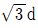
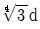
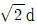
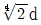
(정답률: 64%)
3. 그림과 같은 외팔보에 있어서 고정단에서 20cm되는 지점의 굽힘모멘트 M은 약 몇 kNㆍm인가?
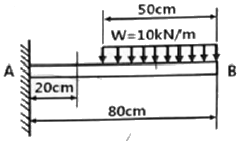
- 1.6
- 1.75
- 2.2
- 2.75
(정답률: 51%)
4. 그림과 같은 양단이 지지된 단순보의 전 길이에 4kN/m의 등분포하중이 작용할 때, 중앙에서의 처짐이 0이 되기 위한 P의 값은 몇 kN인가? (단, 보의 굽힘강성 티는 일정하다.)
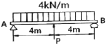
- 15
- 18
- 20
- 25
(정답률: 57%)
5. 철도레일을 20°C에서 침목에 고정하였는데, 레일의 온도가 60°C가 되면 레일에 작용하는 힘은 약 몇 kN인가? (단, 선팽창계수 a=1.2×10-6/℃, 레일의 단면적은 5000mm2, 세로탄성계수는 210GPa이다.)
- 40.4
- 50.4
- 60.4
- 70.4
(정답률: 65%)
6. 안지름 80cm의 얇은 원통에 내압 1MPa이 작용할 때 원통의 최소 두께는 몇 mm인가? (단, 재료의 허용응력은 80MPa이다.)
- 1.5
- 5
- 8
- 10
(정답률: 65%)
7. 지름이 d인 원형단면 봉이 비틀림 모멘트 T를 받을 때, 발생되는 최대 전단응력 τ를 나타내는 식은? (단, Ip는 단면의 극단면 2차 모멘트이다.)
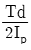
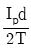
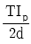
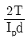
(정답률: 57%)
8. 그림과 같이 양단이 고정된 단면적 1cm2 길이 2m의 케이블을 B점에서 아래로 10mm만큼 잡아당기는 데 필요한 힘 P는 약 몇 N인가? (단, 케이블 재료의 세로탄성계수는 200GPa이며, 자중은 무시한다.)
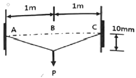
- 10
- 20
- 30
- 40
(정답률: 24%)
9. 지름이 2cm, 길이가 20cm인 연강봉이 인장하중을 받을 때 길이는 0.016cm만큼 늘어나고 지름은 0.0004cm만큼 줄었다. 이 연강봉의 포아송 비는?
- 0.25
- 0.5
- 0.75
- 4
(정답률: 64%)
10. 그림과 같은 외팔보에서 고정부에서의 굽힘모멘트를 구하면 약 몇 kNㆍm인가?
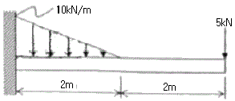
- 26.7(반시계 방향)
- 26.7(시계 방향)
- 46.7(반시계 방향)
- 46.7(시계 방향)
(정답률: 48%)
11. 다음 그림에서 최대굽힘응력은?
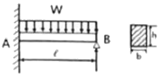
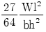
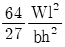
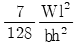
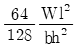
(정답률: 42%)
12. 단면이 가로 100mm, 세로 150mm인 사각단면보다 그림과 같이 하중(P)을 받고 있다. 전단응력에 의한 설계에서 P는 각각 100kN 씩 작용할 때, 이 재료의 허용전단응력은 몇 MPa인가?(단, 안전계수는 2이다.)
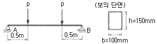
- 10
- 15
- 18
- 20
(정답률: 36%)
13. 세로탄성계수가 200GPa, 포아송의 비가 0.3인 판재에 평면하중이 가해지고 있다. 이 판재의 표면에 스트레인 게이지를 부착하고 측정한 결과 ϵx=5×10-4, ϵy=3×10-4일 때, σx는 약 몇 MPa인가?
- 99
- 100
- 118
- 130
(정답률: 29%)
14. 그림과 같이 원형단면을 갖는 연강봉이 100kN의 인장하증을 받을 때 이 봉의 신장량은 약 몇 cm인가? (단, 세로탄성계수는 200GPa이다.)
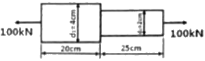
- 0.0478
- 0.0956
- 0.143
- 0.191
(정답률: 62%)
15. 그림과 같이 봉이 평형상태를 유지하기 위해 O점에 작용시켜야 하는 모멘트는 약 몇 Nㆍm인가? (단, 봉의 자중은 무시한다.)
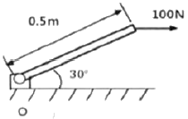
- 0
- 25
- 35
- 50
(정답률: 61%)
16. 다음 그림에서 단순보의 최대 처짐량(δ1)과 양단고정보의 최대 처짐량(δ2)의 비(δ1/δ2)는 얼마인가? (단, 보읙 굽힘강성 El는 일정하고, 자중은 무시한다.)
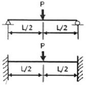
- 1
- 2
- 3
- 4
(정답률: 54%)
17. 단면의 도심 o를 지나면 단면 2차 모멘트 Ix는 약 얼마인가?
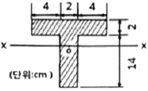
- 1210mm4
- 120.9mm4
- 1210cm4ㅊ
- 120.9cm4
(정답률: 41%)
18. 그림과 같은 비틀림 모멘트 1kNㆍm에서 축적되는 비틀림 변형에너지는 약 몇 Nㆍm인가? (단, 세로탄성계수는 100GPa이고, 포아송의 비는 0.25이다.)
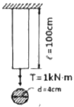
- 0.5
- 5
- 50
- 500
(정답률: 47%)
19. 평면 응력상태에 있는 재료 내부에 서로 직각인 두 방향에서 수직 응력 σx, σy가 작용 할 때 생기는 최대 주응력과 최소 주응력을 각각 σ1, σ2 라 하면 다음 중 어느 관계식이 성립하는가?
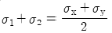
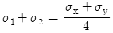
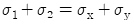
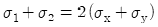
(정답률: 59%)
20. 8cm×12cm인 직사각형 단면의 기둥 길이를 L1, 지름 20cm인 원형 단면의 기둥 길이를 L2라 하고 세장비가 같다면 , 두기둥의 길이의 비(L2/L1) 는 얼마인가?
- 1.44
- 2.16
- 2.5
- 3.2
(정답률: 20%)
2과목: 기계열역학
21. 압력이 200KPa인 공기가 압력이 일정한 상태에서 400kcal의 열을 받으면서 팽창하였다. 이러한 과정에서 공기의 내부에너지가 250kcal만큼 증가하였을 때, 공기의 부피면화(m3)는 얼마인가? (단, 1kcal은 4.186kJ이다.)
- 0.98
- 1.21
- 2.86
- 3.14
(정답률: 59%)
22. 기체가 열량 80kJ 흡수하여 외부에 대하여 20kJ 일을 하였다면 내부에너지 변화(kJ)는?
- 20
- 60
- 80
- 100
(정답률: 62%)
23. 열역학 제2법칙에 대한 설명으로 옳은 것은?
- 과정(process)의 방향성을 제시한다.
- 에너지의 양을 결정한다.
- 에너지의 종류를 판단할 수 있다.
- 공학적 장치의 크기를 알 수 있다.
(정답률: 61%)
24. 카르노 냉동기에서 흡열부와 방열부의 온도가 각각-20°C와 30°C인 경우, 이 냉동기에 40KW의 동력을 투입하면 냉동기가 흡수하는 열량(RT)은 얼마인가? (단, 1RT=3.86KW이다.)
- 23.62
- 52. 48
- 78. 36
- 126.48
(정답률: 57%)
25. 포화액의 비체적은 0.001242m3/kg이고, 포화증기의 비체적은 0.3469m3/kg인 어떤 물질이 있다. 이 물질이 건도 0.65 상태로 2m3인 공간에 있다고 할 때 이 공간 안에 차지한 물질의 질량(kg)은?
- 8.85
- 9.42
- 10.08
- 10.84
(정답률: 52%)
26. 질량이 m이고 비체적이 u인 구(sphere)의 반지름이 R이다. 이때 질량이 4m, 비체적이 2u로 변화한다면 구의 반지름은 얼마인가?
- 2R
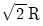
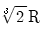
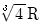
(정답률: 39%)
27. 입구 엔탈피 3155KJ/kg, 입구 속도 24m/s, 출구 엔탈피 2385KJ/kg, 출구 속도 98m/s인 증기터빈이 있다. 증기 유량이 1.5kg/s이고, 터빈의 축 출력이 900kW일 때 터빈과 주위 사이의 열전달량은 어떻게 되는가?
- 약 124kW의 열을 주의로 방열한다.
- 주의로부터 약 124k의 열을 받는다.
- 약 248kW의 열을 주의로 방열한다.
- 주의로부터 약 248kW의 열을 받는다.
(정답률: 48%)
28. 공기 1kg을 정압과정으로 20°C에서 100°C까지 가열하고, 다음에 정직과정으로 100°C에서 200°C까지 가열한다면, 전체 가열에 필요한 총에너지(KJ)는? (단, 정압비열은 1.009kJ/kgㆍK, 정적비열은 0.72kJ/kgㆍK이다.)
- 152.7
- 162.8
- 139.8
- 146. 7
(정답률: 61%)
29. 질량 유량이 10kg/s인 터빈에서 수증기의 엔탈피가 800kJ/kg 감소한다면 출력(kW)은 얼마인가? (단, 역학적 손실, 열손실은 모두 무시한다.)
- 80
- 160
- 1600
- 8000
(정답률: 61%)
30. 다음 그림과 같은 오토 사이클의 효율(%)은? (단, T1=300K, T2=689K, T3=2364K, T4=1029K이고 정적비열을 일정하다.)
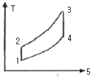
- 42.5
- 48.5
- 56.5
- 62.5
(정답률: 55%)
31. 1000K의 고열원으로부터 750kJ의 에너지를 받아서 300K의 저열원으로 550kJ의 에너지를 방출하는 열기관이 있다. 이 기관의 효율(η)과 Clausius 부등식의 만족 여부는?
- η=26.7%이고, Clausius 부등식을 만족한다.
- η=26.7%이고, Clausius 부등식을 만족하지 않는다.
- η=73.3%이고, Clausius 부등식을 만족한다.
- η=73.3%이고, Clausius 부등식을 만족하지 않는다.
(정답률: 41%)
32. 메탄올의 정압비열(Cp)이 다음과 같은 온도 T(K)에 의한 함수로 나타날 때 메탄올 1kg을 200K에서 400K까지 정압과정으로 가열하는데 필요한 열량(kJ)은? (단, Cp의 단위는 kJ/kgㆍK이다.)
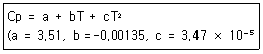
- 722.9
- 1311.2
- 1268.7
- 866.2
(정답률: 37%)
33. 증기압축 냉동기에 사용되는 냉매의 특징에 대한 설명으로 틀린 것은?
- 냉매는 냉동기의 성능에 영향을 미친다.
- 냉매는 무독성, 안정성, 저가격 등의 조건을 갖추어야 한다.
- 무기화합물 냉매인 암모니아는 열역학적 특성이 우수하고, 가격이 비교적 저렴하여 널리 사용되고 있다.
- 최근에 오존파괴의 문제로 CFC 냉매 대신에 R-12(CCI2F2)가 냉매로 사용되고 있다.
(정답률: 49%)
34. 열역학적 관점에서 일과 열에 관한 설명으로 틀린 것은?
- 일과 열은 온도와 같은 열역학적 상태량이 아니다.
- 일의 단위는 J(joule)이다.
- 일의 크기는 힘과 그 힘이 작용하여 이동한 거리를 곱한 값이다.
- 일과 열을 점 함수(point function)이다.
(정답률: 60%)
35. 다음 중 브레이던 사이클의 과정으로 옳은 것은?
- 단열 압축→정적 가열→단열 팽창→정적 방열
- 단열 압축→정압 가열→단열 팽창→정적 방열
- 단열 압축→정적 가열→단열 팽창→정압 방열
- 단열 압축→정압 가열→단열 팽창→정압 방열
(정답률: 46%)
36. 오토 사이클의 효율이 55%일 때 101.3kPa, 20°C의 공기가 압축되는 압축비는 얼마인가? (단, 공기의 비열비는 1.4이다)
- 5.28
- 6.32
- 7.36
- 8.18
(정답률: 58%)
37. 공기가 등온과정을 통해 압력이 200kPa, 비체적이 0.02m3/kg인 상태에서 압력이 100kPa인 상태로 팽창하였다. 공기를 이상기체로 가정할 때 시스템이 이 과정에서 한 단위 질량당 일(kJ/kg)은 약 얼마인가?
- 1.4
- 2.0
- 2.8
- 5.6
(정답률: 42%)
38. 100°C의 수증기 10kg이 100°C의 물로 응축되었다. 수증기의 엔트로피 변화량(kJ/K)은? (단, 물의 잠열은 100℃에서 2257KJ/kg이다.)
- 14.5
- 5390
- -22570
- -60.5
(정답률: 48%)
39. 분자량 32인 기체의 정적비열이 0.714KJ/kgㆍK일 때 기체의 비열비는? (단, 일반 기체상수는 8.314kJ/kmolㆍK이다.
- 1.364
- 1.382
- 1.414
- 1.446
(정답률: 58%)
40. 내부에너지가 40KJ, 절대압력이 200KPa, 체적이 0.1m3, 절대온도가 300K인 계의 엔탈피는(kJ)는?
- 42
- 60
- 80
- 240
(정답률: 60%)
3과목: 기계유체역학
41. 다음 중 유선(steam line)에 대한 설명으로 옳은 것은?
- 유체의 흐름에 있어서 속도 벡터에 대하여 수직한 방향을 갖는 선이다.
- 유체의 흐름에 있어서 유동단면의 중심을 연결한 선이다.
- 비정상류 흐름에서만 유동의 특성을 보여주는 선이다.
- 속도 벡터에 접하는 방향을 가지는 연속적인 선이다.
(정답률: 51%)
42. 점선계수(μ)가 0.098Nㆍs/m2인 유체가 평판 위를 u(y)=750y-2.5×10-6y3(m/s)의 속도 분포로 흐를 때 평판면(y=0)에서의 전단응력은 약 몇 N/m2인가? (단, y는 평판면으로부터 m단위로 잰 수직거리이다.)
- 7.35
- 73.5
- 14.7
- 147
(정답률: 55%)
43. 안지름이 0.01m인 관내로 점성계수가 0.0⑤Nㆍs/m2, 밀도가 800kg/m3인 유체가 1m/s의 속도로 흐를 때, 이 유동의 특성은? (단, 천이 구간은 레이놀즈수가 2100~4000에 포함될 때를 기준으로 한다.)
- 층류 이동
- 난류 이동
- 천이 유동
- 위 조건으로는 알 수 없다.
(정답률: 61%)
44. 그림과 같이 비중 0.85인 기름이 흐르고 있는 개수로에 피토관을 설치하였다. △h=30mm, h=100일 때 기름의 유속은 약 몇 m/s인가? (단, △h 부분에도 기름이 차있는 상태이다.)
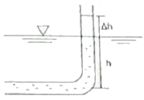
- 0.767
- 0.976
- 1.59
- 6.25
(정답률: 51%)
45. 밀도가 500kg/m3인 원기둥이 1/3만큼 액체면 위로 나온 상태로 떠 있다. 이 액체의 비중은?
- 0.33
- 0.5
- 0.75
- 1.5
(정답률: 32%)
46. 마찰계수가 0.02인 파이프(안지름 0.1m, 길이 50m) 중간에 부차적 손실계수가 5인 밸브가 부착되어 있다. 밸브에서 발생하는 손실수두는 총 손실수두의 약 몇 %인가?
- 20
- 25
- 33
- 50
(정답률: 38%)
47. 2차원 극좌표계(γ, θ)에서 속도 포텐셜이 다음과 같을 때 원주방향 속도(uθ)는? (단, 속도 포텐셜 ø는
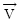
=▽ø로 정의한다.)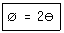
- 4πr
- 2r
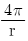
- 2/r
(정답률: 30%)
48. 그림과 같이 고정된 노즐로부터 밀도가 ρ인 액체의 제트가 속도 V로 분출하여 평판에 충돌하고 있다. 이 때 제트의 단면적이 A이고 평판이 u인 속도로 제트와 반대방향으로 운동할 때 평판에 작용하는 힘 F는?
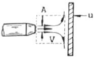
- F=ρA(V-u)
- F=ρA(V-u)2
- F=ρA(V+u)
- F=ρA(V+u)2
(정답률: 44%)
49. 지름이 0.01m인 구 주위를 공기가 0.001m/s로 흐르고 있다. 항력계수
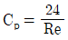
로 정의할 때 구에 작용하는 항력은 약 몇 N인가? (단, 공기의 밀도는 1.1774kg/m3, 점성계수는 1.983×10-5kg/mㆍs이며, Re는 레이놀즈수를 나타낸다.- 1.9×10-9
- 3.9×10-9
- 5.9×10-9
- 7.9×10-9
(정답률: 54%)
50. 유체 속에 잠겨있는 경사진 판의 윗면에 작용하는 압력 힘의 작용점에 대한 설명 중 옳은 것은?
- 판의 도심보다 위에 있다.
- 판의 도심에 있다.
- 판의 도심보다 아래에 있다.
- 판의 도심과 관계가 없다.
(정답률: 58%)
51. 다음 중에서 차원이 다른 물리량은?
- 압력
- 전단응력
- 동력
- 체적탄성계수
(정답률: 53%)
52. 안지름이 4mm이고, 길이가 10m인 수평 원형관 속을 20℃의 물이 층류로 흐르고 있다. 배관 10m길이에서 압력 강하가 10kPa이 발생하며, 이 때 점성계수는 1.02×10-3Nㆍs/m2일 때 유량은 약 몇 cm3/s인가?
- 6.16
- 8.52
- 9.52
- 12.16
(정답률: 51%)
53. 역학적 상사성이 성립하기 위해 무차원 수인 프루드수를 같게 해야 되는 흐름은?
- 점성계수가 큰 유체의 흐름
- 표면 장력이 문제가 되는 흐름
- 자유표면을 가지는 유체의 흐름
- 압축성을 고려해야 되는 유체의 흐름
(정답률: 52%)
54. 표준대기압 상태인 어떤 지방의 호수에서 지름이 d인 공기의 기포가 수면으로 올라오면서 지름이 2배로 팽창하였다. 이 때 기포의 최초 위치는 수면으로부터 약 몇 m아래인가? (단, 기포내의 공기는 Boyle법칙에 따르며, 수중의 온도도 일정하다고 가정한다. 또한 수면의 기압(표준대기압)은 101.325kPa이다.)
- 70.8
- 72.3
- 74.6
- 77.5
(정답률: 25%)
55. 평판 위를 공기가 유속 15m/s로 흐르고 있다. 선단으로부터 10cm인 지점의 경계층 두께는 약 몇 mm인가? (단, 공기의 동점성계수는 1.6×10-5m2/s이다.)
- 0.75
- 0.98
- 1.36
- 1.63
(정답률: 32%)
56. 비중이 0.8인 액체를 10m/s 속도로 수직방향으로 분사하였을 때, 도달할 수 있는 최고높이는 약 몇 m인가? (단, 액체는 비압축성, 비점성 유체이다.)
- 3.1
- 5.1
- 7.4
- 10.2
(정답률: 52%)
57. 그림과 같이 설치된 펌프에서 물의 유입지점 1의 압력은 98kPa, 방출지점 2의 압력은 1⑤Kpa이고, 유입지점으로부터 방출지점까지의 높이는 20m이다. 배관 요소에 따른 전체수두손실은 4m이고 관 지름이 일정할 때 물을 양수하기 위해서 펌프가 공급해야 할 압력은 약 몇 kPa인가?
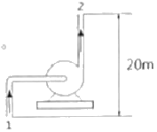
- 242
- 324
- 431
- 514
(정답률: 33%)
58. 지상에서의 압력은 P1, 지상 1000m 높이에서의 압력은 P2라고 할 때 압력비
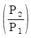
는? (단, 온도가 15℃로 높이에 상관없이 일정하다고 가정하고, 공기의 밀도는 가체상수가 287J/kgㆍK인 이상기체 법칙을 따른다.)- 0.80
- 0.89
- 0.95
- 1.1
(정답률: 27%)
59. 비행기 날개에 작용하는 양력 F에 영향을 주는 요소는 날개의 코드길이 L, 받음각 a, 자유유동 속도 V, 유체의 밀도 ρ, 점섬계수 μ, 유체 내에서의 음속 c이다. 이 변수들로 만들 수 있는 독립 무차원 매개변수는 몇 개인가?
- 2
- 3
- 4
- 5
(정답률: 26%)
60. 원유를 매분 240L의 비율로 안지름 80mm인 파이프를 통하여 100m 떨어진 곳으로 수송할 때 관내의 평균 유속은 약 몇 m/s인가?
- 0.4
- 0.8
- 2.5
- 3.1
(정답률: 53%)
4과목: 기계재료 및 유압기기
61. 베이나이트(bainite) 조직을 얻기 위한 항온열처리 조작으로 옳은 것은?
- 마퀜칭
- 소성가공
- 노멀라이징
- 오스템퍼링
(정답률: 59%)
62. 보자력이 작고, 미세한 외부 자기장의 변화에도 크게 자화되는 특징을 가진 연질 자성재료는?
- 센더스트
- 알니고자석
- 페라이트자석
- 희토류계자석
(정답률: 32%)
63. 다음의 조직 중 경도가 가장 높은 것은?
- 펄라이트
- 마텐자이트
- 소르바이트
- 트루스타이트
(정답률: 68%)
64. 레데뷰라이트에 대한 설명으로 옳은 것은?
- a와 Fe의 혼합물이다.
- r와 Fe3C의 혼합물이다.
- δ와 Fe의 혼합물이다.
- a와 Fe3C의 혼합물이다.
(정답률: 52%)
65. 다음 중 공구강 강재의 종류에 해당되지 않는 것은?
- STS 3
- SM25C
- STC 1⑤
- SKH 51
(정답률: 46%)
66. 재료의 전연성을 알기 위해 구리판, 알루미늄판 및 그 밖의 연성 판재를 가압하여 변형 능력을 시험하는 것은?
- 굽힘시험
- 압축시험
- 커핑시험
- 비틀림 시험
(정답률: 43%)
67. 주철의 특징을 설명한 것 중 틀린 것은?
- 백주철은 Si 함량이 적고, Mn 함량이 많아 화합 탄소로 존재한다.
- 회주철은 C, Si 함량이 많고, Mn 함량이 적은 파면이 회색을 나타내는 것이다.
- 구상흑연주철은 흑연의 형상에 따라 판상, 구상, 공정상흑연주철로 나눌 수 있다.
- 냉경주철은 주물 표면을 회주철로 인성을 높게 하고, 내부는 Fe3C로 단단한 조직으로 만든다.
(정답률: 45%)
68. 다음 중 알루미늄 합금계가 아닌 것은?
- 라우탈
- 실루민
- 하스텔로이
- 하이드로날륨
(정답률: 48%)
69. 황동의 화학적 성질과 관계없는 것은?
- 탈아연부식
- 고온탈아연
- 자연균열
- 가공경화
(정답률: 42%)
70. 회복과정에서의 축적에너지에 대한 설명으로 옳은 것은?
- 가공도가 적을수록 축적에너지의 양은 증가한다.
- 결정입도가 작을수록 축적에너지의 양은 증가한다.
- 불순물 원자의 첨가가 많을수록 축적 에너지의 양은 감소한다.
- 낮은 가공온도에서의 변형은 축적에너지의 양을 감소시킨다.
(정답률: 34%)
71. 유압펌프에서 유동하고 있는 작동유의 압력이 국부적으로 저하되어, 증기나 함유기체를 포함하는 기포가 발생하는 현상은?
- 폐입 현상
- 공진 현상
- 케비테이션 현상
- 유압유의 열화 촉진 현상
(정답률: 67%)
72. 필요에 따라 작동 유체의 일부 또는 전량을 분기시키는 관로는?
- 바이패스 관로
- 드레인 관로
- 동기관로
- 주관로
(정답률: 60%)
73. 유압 작동유의 구비조건에 대한 설명으로 틀린 것은?
- 인화점 및 발화점이 낮을 것
- 산화 안정성이 좋을 것
- 점도지수가 높을 것
- 방청성이 좋을 것
(정답률: 62%)
74. 압력 6.86MPa, 토출량 50L/min이고 운전 시 소요 동력이 7kW인 유압펌프의 효율은 약 몇 %인가?
- 78
- 82
- 87
- 92
(정답률: 60%)
75. 다음 중 압력 제어 밸브에 속하지 않는 것은?
- 카운터 밸런스 밸브
- 릴리프 밸브
- 시퀀스 밸브
- 체크 밸브
(정답률: 59%)
76. 액추에이터의 배출 쪽 관로 내의 흐름을 제어함으로써 속도를 제어하는 회로는?
- 방향 제어회로
- 미터 인 회로
- 미터 아웃 회로
- 압력 제어 회로
(정답률: 66%)
77. 그림과 같은 유압 기호의 설명이 아닌 것은?
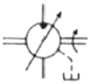
- 유압 펌프를 의미한다.
- 1방향 유동을 나타낸다.
- 가병 용량형 구조이다.
- 외부 드레인을 가졌다.
(정답률: 52%)
78. 유압 속도 제어회로 중 미터 아웃 회로의 설치 목적과 관계없는 것은?
- 피스톤이 자주할 염려를 제거한다.
- 실린더에 배압을 형성한다.
- 유압 작동유의 온도를 낮춘다.
- 실린더에서 유출되는 유량을 제어하여 피스톤 속도를 제어한다.
(정답률: 55%)
79. 실린더 행정 중 임의의 위치에서 실린더를 고정시킬 필요가 있을 때라 할지라도, 부하가 클 때 또는 장치 내의 압력저하로 실린더 피스톤이 이동하는 것을 방지하기 위한 회로로 가장 적합한 것은?
- 축압기 회로
- 로킹 회로
- 무부하 회로
- 압력설정 회로
(정답률: 54%)
80. 긴 스트로크를 줄 수 있는 다단 튜브형의 로드를 가진 실린더는?
- 벨로스형 실린더
- 탠덤형 실린더
- 가병 스트로크 실린더
- 텔레스코프형 실린더
(정답률: 35%)
5과목: 기계제작법 및 기계동력학
81. 지면으로부터 경사각이 30°인 경사면에 정지된 블록이 미끄러지기 시작하여 10m/s의 속력이 될 때까지 걸린 시간은 약 몇 초인가? (단, 경사면과 블록과의 동마찰계수는 0.3이라고 한다.)
- 1.42
- 2.13
- 2.84
- 4.24
(정답률: 28%)
82. 그림과 같은 단진가 운동에서 길이 L이 4배로 늘어나면 진동주기는 약 몇 배로 변하는가? (단, 운동은 단일 평면상에서만 한다고 가정하고, 진동 각변위(θ)는 충분히 작다고 가정한다.)
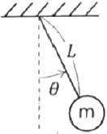
- √2
- 2
- 4
- 16
(정답률: 35%)
83. 길이가 L인 가늘고 긴 일정한 단면의 봉이 좌측단에서 핀으로 지지되어 있다. 봉을 그림과 같이 수평으로 정지시킨 후, 이를 놓아서 중력에 의해 회전시킨다면 봉의 위치가 수직이 되는 순간에 봉의 각속도는? (단, g는 중력가속도를 나타내고, 핀 부분의 마찰은 무시한다.)
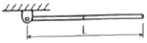
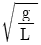
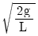
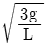
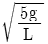
(정답률: 33%)
84. 회전 속도가 2000rpm인 원심 팬이 있다. 방진고무로 탄성 지지시켜 진동 전달률을 0.3으로 하고자 할 때, 방진고무의 정적 수축량은 약 몇 mm인가? (단, 방진고무의 감쇠계수는 0으로 가정한다.)
- 0.71
- 0.97
- 1.41
- 2.20
(정답률: 25%)
85. x방향에 대한 운동 방정식이 다음과 같이 나타날 때 이 진공계에서의 감쇠 고유진동수(damped natural frequency)는 약 몇 red/s인가?
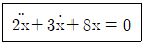
- 1.35
- 1.85
- 2.25
- 2.75
(정답률: 32%)
86. 장력이 100N 걸려 있는 줄을 모터가 지속적으로 5m/s의 속력으로 끌어당기고 있다면 사용된 모터의 일률(Power)은 몇 W인가?
- 51
- 250
- 350
- 500
(정답률: 58%)
87. 물리량에 대한 차원 표시가 틀린 것은? (단, N:질량, L:길이, T:시간)
- 힘:MLT-2
- 각가속도:T-2
- 에너지:ML2T-1
- 선형운동량:MLT-1
(정답률: 45%)
88. A에서 던진 공이 L1만큼 날아간 후 B에서 튀어 올라 다시 날아간다. B에서 반발계수를 e라 하면 가시 날아간 거리 L2는? (단, 공과 바닥 사이에서 마찰은 없다고 가정한다.)
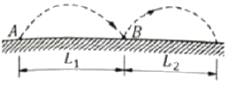
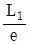
- eL1
- e2L1
(정답률: 39%)
89. 그림과 같이 반지름이 45mm인 바퀴가 미끄럼 없이 왼쪽으로 구르고 있다. 바퀴 중심의 속력 0.9m/s로 일정하다고 할 때, 바퀴 끝단의 한 점(A)의 속도(uA, m/s)의 가속도(aA, m/s2)의 크기는?
- uA=0, aA=0
- uA=0, aA=18
- uA=0.9, aA=0
- uA=0.9, aA=18
(정답률: 31%)
90. 다음 식과 같은 단순 조화운동(simple garmonic motion)에 대한 설명으로 틀린 것은? (단, 변위 x는 시간 t에 대한 함수이고, A, ω, ø는 상수이다.)
- 변위와 속도 사이에 위상차가 없다.
- 주기적으로 같은 운동이 반복된다.
- 가속도의 진폭은 변위의 진폭에 비례한다.
- 가속도의 주기와 변위 주기는 동일하다.
(정답률: 42%)
91. 절삭유가 갖추어야 할 조건으로 틀린 것은?
- 미찰계수가 적고 인화점이 높을 것
- 냉각성이 우수하고 윤활성이 좋을 것
- 장시간 사용해도 변질되지 않고 인체에 무해할 것
- 절삭유의 표면장력이 크고 칩의 생성부에는 침투되지 않을 것
(정답률: 60%)
92. 렌치, 스패너 등 작은 공구를 단조할 때 다음 중 가장 적합한 것은?
- 로터리 스웨이징
- 프레스 가공
- 형 단조
- 자유단조
(정답률: 46%)
93. 지름 400mm의 롤러를 이용하여, 폭 300mm 두께 25mm의 판재를 열간 압연하여 두께 20mm가 되었을 때, 압하량과 압하율은?
- 압아량 5mm, 압하율 20%
- 압아량 5mm, 압하율 25%
- 압아량 20mm, 압하율 25%
- 압아량 100mm, 압하율 20%
(정답률: 53%)
94. 일반적으로 보통 선반의 크기를 표시하는 방법이 아닌 것은?
- 스핀들의 회전속도
- 왕복대 위의 스윙
- 베드 위의 스윙
- 주축대와 심압대 양 센터 간 최대거리
(정답률: 49%)
95. 방전가공(Electro Discharge Machining)에서 전극재료의 구비조건으로 적절하지 않은 것은?
- 기계가공이 쉬울 것
- 가공 속도가 빠를 것
- 전극소모량이 많을 것
- 가공 정밀도가 높을 것
(정답률: 66%)
96. 강재의 표면에 Si를 침투시키는 방법으로 내식성, 내열성 등을 향상시키는 방법은?
- 브로나이징
- 칼로라이징
- 크로마이징
- 실리코나이징
(정답률: 63%)
97. 주물용으로 가장 많이 사용하는 주물사의 주성분은?
- Al2O3
- SiO2
- MgO
- FeO3
(정답률: 43%)
98. 버니어캘리퍼스의 눈금 24.5mm를 25등분한 경우 최소 측정값은 몇 mm인가? (단, 본척의 눈금 간격은 0.5mm이다.)
- 0.01
- 0.02
- 0.⑤
- 0.1
(정답률: 53%)
99. 용접 시 발생하는 불량(결함)에 해당하지 않는 것은?
- 오버랩
- 언더컷
- 콤퍼지션
- 용입불량
(정답률: 56%)
100. 유성형(planetary type) 내면 연삭기를 사용한 가공으로 가장 적합한 것은?
- 암나사의 연삭
- 호브(hob)의 치형 연삭
- 블록게이지의 끝마무리 연삭
- 내연기관 실린더의 내면 연삭
(정답률: 45%)
최대 처짐은 다음과 같이 구할 수 있다.
δmax = (5 × 103 N) × (100 × 103 mm)4 / (8 × 210 × 106 N/mm2 × 6 × 103 mm × 104 mm3) = 0.3167 mm ≈ 0.317 mm
따라서, 정답은 "0.317"이다.